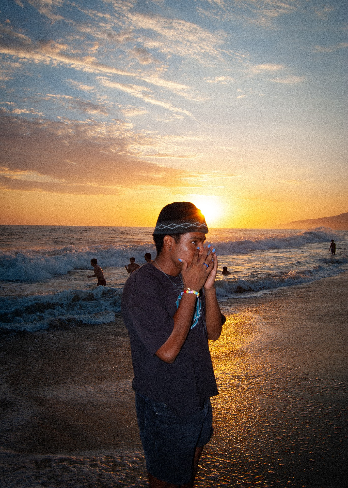

i chose this image because the composition felt the strongest and most natural. the subject stands out against the sunset, and the reflection on the water helps guide the viewer’s eye through the image. i was thinking about contrast, negative space, and depth when taking it. the 5 by 7 crop kept the portrait feel of the image, and adjusting the tonal range helped balance the darker foreground with the bright sunset in the background.